Historical and reference coats of arms


Kazan
Guide. Places in this edition: 32.
OTIUM is the practice of deliberate leisure. In the classical sense, otium is not escape from work but time when attention returns to memory, landscape, and thought — without a utilitarian deadline.
We shape routes for lingering, not for checklist tourism. The goal is presence in a place rather than consumption of sights.
OTIUM is not a tour operator. It is an invitation to walk, pause, and leave a route unfinished if the light on a façade deserves another minute.
Historical and reference coats of arms
Guide. Places in this edition: 32.
Kazan is the capital of Tatarstan and a major Volga metropolis where Tatar and Russian cultures meet.
The kremlin’s Kul Sharif Mosque and Orthodox cathedrals symbolise that dialogue across centuries. Kazan is also a university, sporting, and industrial centre for the wider Volga region.
Imperial and Soviet industry strengthened transport on the Volga; the 2013 Universiade renewed infrastructure. Kazan stresses intercultural dialogue inside Russia and promotes science, sport, and tourism across the Volga macro-region.

Historic Orthodox cathedral inside the kremlin, part of the ensemble inscribed on the World Heritage List. Active church: silence and photography rules apply. Combine with other kremlin monuments in one visit.

Bauman Street — street in Kazan, Russia.

Main pedestrian thoroughfare with historic façades, cafés, and street life between the kremlin quarter and the core city. Evenings and weekends are the liveliest. Good starting point for walking loops around the centre.
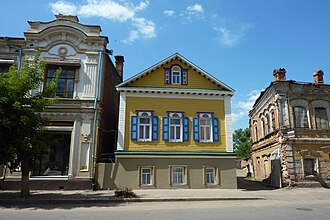
Chak-Chak Museum is a museums in Kazan. Photo tags: moscow, red place, museum, church. Reference image context: https://pixabay.com/photos/moscow-red-place-museum-church-1935103/.
Public photo archives associate this site with: moscow, red place, museum, church. Worth a stop when exploring Kazan.
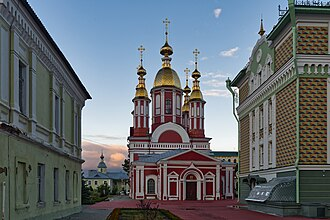
Church of Our Lady of Kazan is a places of worship in Kazan.
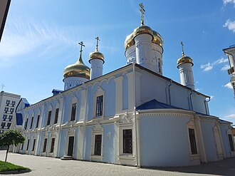
Epiphany Cathedral Kazan is a places of worship in Kazan. Photo tags: cathedral, temple, church, building. Reference image context: https://pixabay.com/photos/cathedral-temple-church-building-5932540/. Public photo archives associate this site with: cathedral, temple, church, building.

Distinctive registry and celebration complex beside the Kazanka, nicknamed for its chalice-like roofline. Exterior views are popular with photographers at sunset. Interior access is tied to ceremonies and official events.
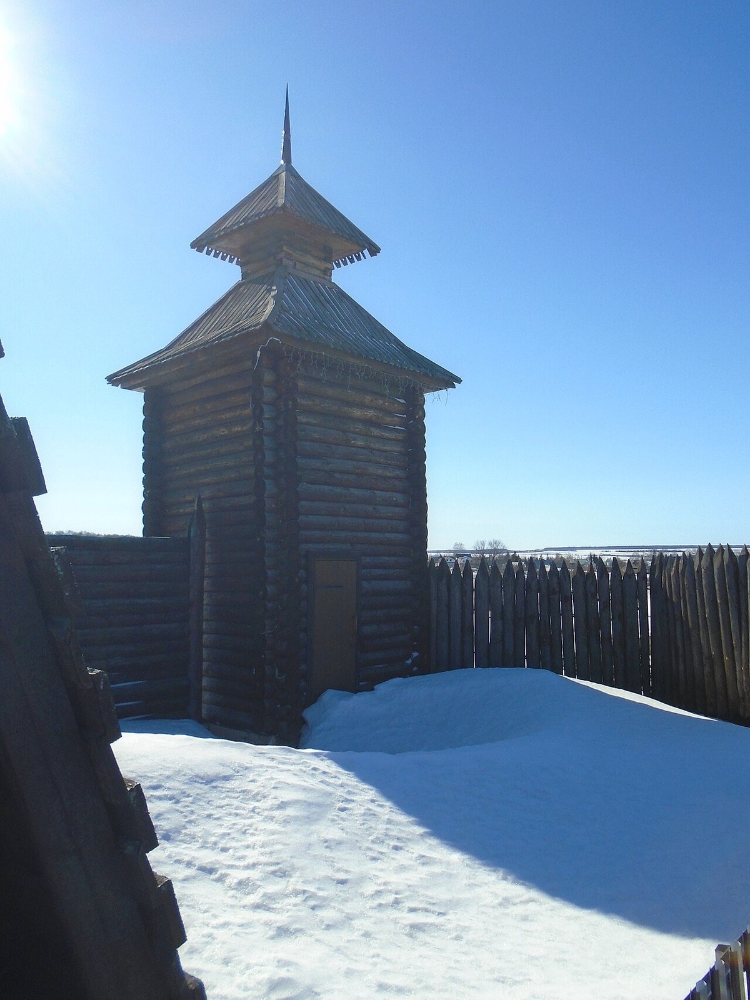
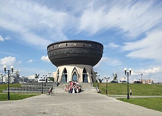
Kazan Family Center view is a landmarks in Kazan. Photo tags: center, arbat street, kazan, arbat street. Reference image context: https://pixabay.com/photos/center-arbat-street-kazan-211205/. Public photo archives associate this site with: center, arbat street, kazan, arbat street.
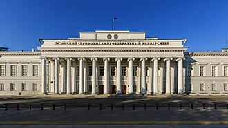
Kazan Federal University is a landmarks in Kazan. Photo tags: kazan, city, architecture, cityscape. Reference image context: https://pixabay.com/photos/kazan-city-architecture-cityscape-3227834/. Public photo archives associate this site with: kazan, city, architecture, cityscape.

UNESCO-listed fortress and the symbolic heart of Tatarstan, with kremlin walls, towers, and major religious buildings. Allow time for security checks at kremlin entrances. Combine with museums and viewpoints along the inner territory.
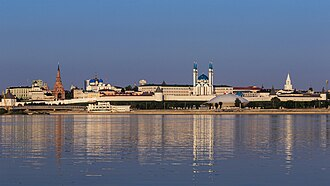
The Kazan Kremlin is a majestic ensemble of historical monuments and architectural treasures nestled within the heart of Tatarstan's capital. It stands as a testament to centuries of cultural fusion between Russia and the Tatars. Established in the early 14th century under Tatar rulers. Fortifications were significantly enhanced by Ivan the Terrible in the late 16th century. Contains the Annunciation Cathedral, one of the oldest Russian Orthodox churches in the region. Home to the Kul-Sharif Mosque, named after a prominent imam who died defending the city against Russian forces. Listed as a UNESCO World Heritage Site since 2000.
Originally built by the Tatars in the 14th century, the Kremlin was later expanded and fortified by the Russians during the 16th and 17th centuries. Today it serves as a symbol of unity, housing both Russian Orthodox churches and Islamic mosques, reflecting the harmonious coexistence of two cultures. Visit the Kazan Kremlin to immerse yourself in the rich history and cultural heritage of Tatarstan.

Aerial context for the kremlin citadel on a rise above the Kazanka and the city grid. Useful for understanding how the kremlin relates to the rivers and centre. Best light is often morning or late afternoon.

Seasonal view of the kremlin ensemble under snow, highlighting roofs and open spaces inside the walls. Paths can be icy; wear sturdy footwear. Shorter daylight in winter: plan photography earlier.
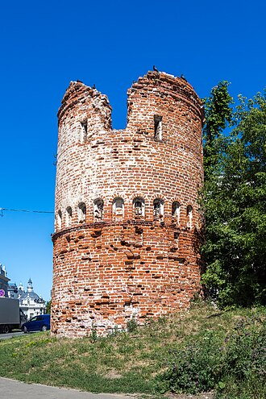
Kazan Mother of God icon church is a places of worship in Kazan. Photo tags: cathedral of the kazan icon of the mother of god, the red square, moscow, russia. Reference image context: https://pixabay.com/photos/cathedral-of-the-kazan-icon-of-the-mothe-177836/. Public photo archives associate this site with: cathedral of the kazan icon of the mother of god, the red square, moscow, russia.
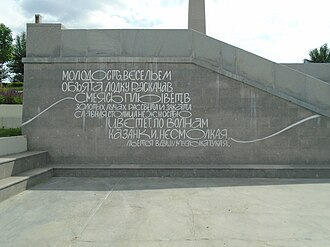
Kremlin embankment Kazan is a public space in Kazan. Photo tags: kazan, kul-sharif, mosque, russia. Reference image context: https://pixabay.com/photos/kazan-kul-sharif-mosque-russia-2825615/. Public photo archives associate this site with: kazan, kul-sharif, mosque, russia.
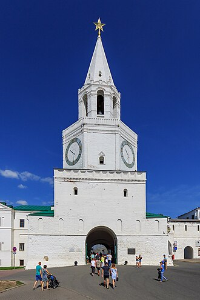
Kremlin Spasskaya Tower is a landmarks in Kazan. Photo tags: the kremlin, fair, red, area. Reference image context: https://pixabay.com/photos/the-kremlin-fair-red-area-moscow-3872941/. Public photo archives associate this site with: the kremlin, fair, red, area.
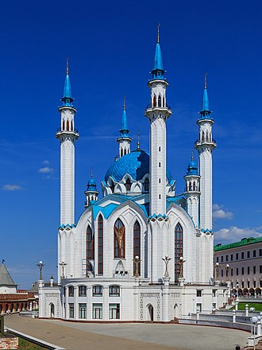
Qol Şärif Mosque — mosque in Qazan Kremlin, Qazan, Tatarstan.

Large congregational mosque inside the kremlin, rebuilt as a major landmark of modern Kazan. Dress modestly; follow posted visitor rules. Interior visits may pause during prayer times.
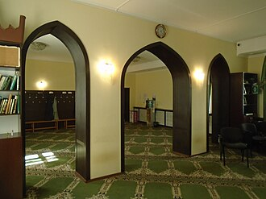
Märcani Mosque — mosque in İske Bistä microdistrict, Waxitof City District, Qazan, Tatarstan.

Riverside park marking the millennium of Kazan, with paths and views toward the kremlin quarter. Family-friendly; busy on warm weekends. Links visually to the Family Center across the water.
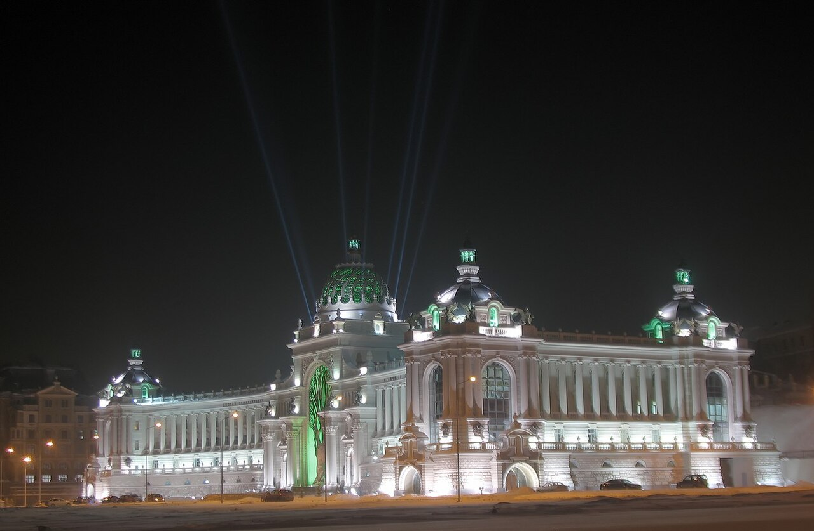
Minselhoz is a landmarks in Kazan.
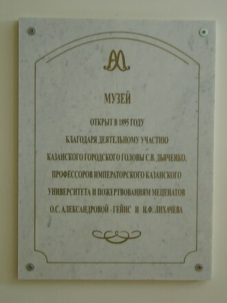
National Museum of Tatarstan is a museums in Kazan. Photo tags: kazan, city, avenue, russia. Reference image context: https://pixabay.com/photos/kazan-city-avenue-russia-3994015/. Public photo archives associate this site with: kazan, city, avenue, russia.
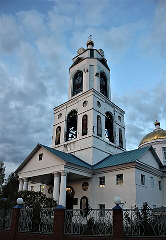
Nikolsky Cathedral Kazan is a places of worship in Kazan.
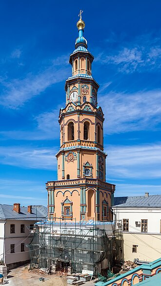
Old Peter and Paul Cathedral is a places of worship in Kazan. Photo tags: lithuania, kaunas, city, cathedral of saints peter and paul. Reference image context: https://pixabay.com/photos/lithuania-kaunas-city-3721843/. Public photo archives associate this site with: lithuania, kaunas, city, cathedral of saints peter and paul.

Baroque cathedral away from the kremlin, associated with the Russian imperial presence in the city. Check service times before visiting. Pairs well with a stroll along nearby streets.
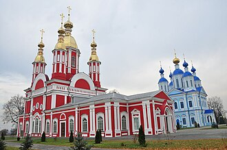
St John the Baptist Church is a places of worship in Kazan. Photo tags: church window, baptism, sacrament, glass window. Reference image context: https://pixabay.com/photos/church-window-baptism-sacrament-1016443/. Public photo archives associate this site with: church window, baptism, sacrament, glass window.
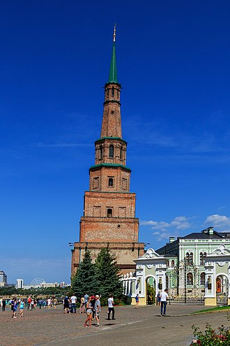
Söyembikä leaning tower is a landmarks in Kazan. Photo tags: pisa, leaning tower of pisa, tower of pisa, italy. Reference image context: https://pixabay.com/photos/pisa-leaning-tower-of-pisa-4420684/. Public photo archives associate this site with: pisa, leaning tower of pisa, tower of pisa, italy.

Often busy with tour groups in peak season. Check whether interior climbs are open before planning around them.
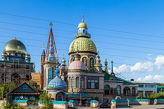
Temple of All Religions is a places of worship in Kazan. Photo tags: temple, religion, kazan, church. Reference image context: https://pixabay.com/photos/temple-religion-kazan-church-4981094/. Public photo archives associate this site with: temple, religion, kazan, church.
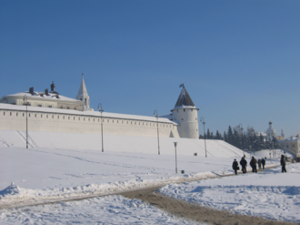
Transfiguration Monastery Kazan is a places of worship in Kazan.
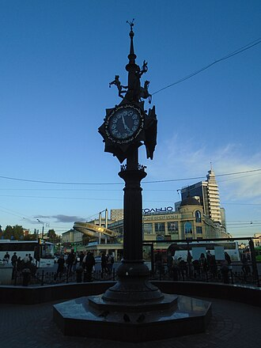
Tukay Square is a public space in Kazan.